ひざ掛け、始めました [梅吉]
前日比−５℃、−３℃とぐんぐん気温が低くなってきたのでそろそろ冬支度。
まず初めにひざ掛けを出してきました。
お掃除の間だけちょっと・・・とテーブルの上に置いておくと・・・
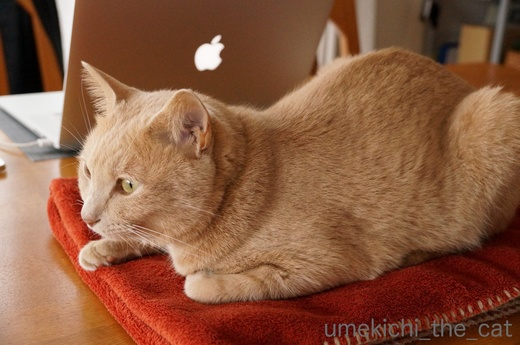
ああ〜やられた( ；∀；)
こういう事に関しては、ほんっとうに敏感ですよね！梅吉さんは！！
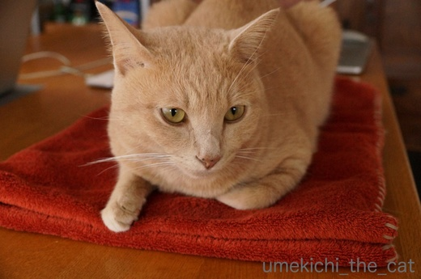
![[猫]](https://blog.ss-blog.jp/_images_e/101.gif) せやで しあわせの きゅうどうしゃ いうてや
せやで しあわせの きゅうどうしゃ いうてや
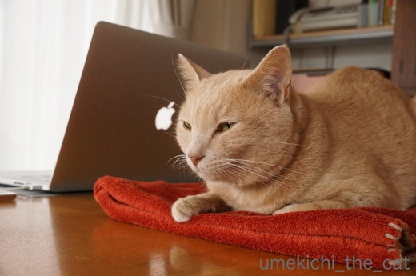
そんなねむねむのお顔されたらね〜。
おかーさんは今日はそのひざ掛け使うの諦めますよ・・・
でもせめてテーブルの上からは避けてくださいね。
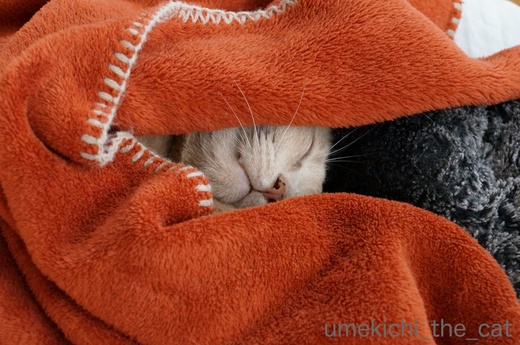
くるっと包んでもう一枚のひざ掛けの上へ。
ちらキバで幸せそうに寝始めました。
いいんですよ！２枚しか無いひざ掛け全部使っても・・・(꒦ິ⌑꒦ີ)
梅吉が包まっているのはニトリのひざ掛け。
軽くてあったかくってしかも安い。確か400円くらい。
もう一枚新調しようかなぁ。でも
ひざ掛けは 買っても買っても 猫のもの
になるんだろうな・・・・
皆さんはあったかグッズ準備し始めましたか？
ただいま我が家はひざ掛けや扇風機が混在しているカオスの世界ですw
 ↑ガブッと一押し↑
↑ガブッと一押し↑
先週８日、京都国立博物館 特別展覧会 国宝へ行ってきました。
会期を４期に分けて作品をあれこれ入れ替えるのですべての展示品を見ようと思うと
４回博物館に足を運ばねばなりません。いじわるーーー！！
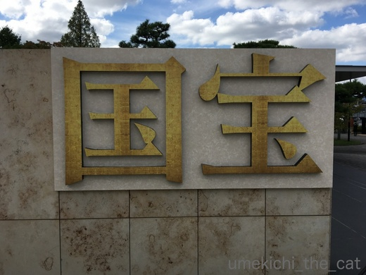
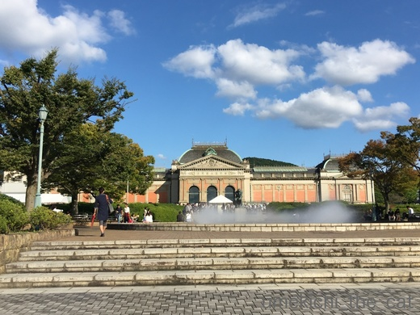
季節外れに暑い日で並んでいると汗がダラダラ。
どのくらい並んで待つのかしらね・・・と公式Twitterをチェック。
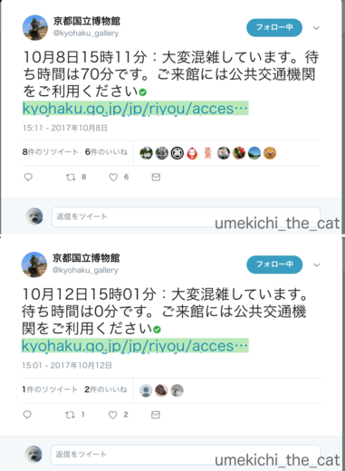
こんな感じでちょっと怪しげなtweetの情報なんですが・・・^^;
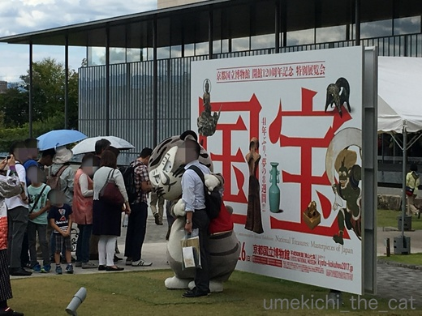
来場者サービスにがんばるトラりん 中の人がんばれー！＾＾！
トラりんの目つきっていたずらを企んでいる時の梅吉の目つきにそっくり。親近感わきます。
係りの人が70分待ちとアナウンスしていましたが２〜30分くらいで中に入れたかな。
展示会場はものすごい人。人混みすぎて普通の声でしゃべっても全然迷惑じゃありません。
小さい展示物は近寄ることすら難しく人垣の間からチラッと見えただけのものもありました（涙）
でも普賢菩薩像、火焔型土器などの見たいものはしっかり見てきましたよ〜。
展示品一点一点のクオリティが高すぎるのと人が多すぎるので見ていてとっても疲れます。
作品を所蔵している場所を確認して
「大阪、京都、奈良？今度現地に行ってゆっくり見るわ！」という気持ちになるのは
関西在住者の奢りでしょうか・・・ (^▽^;)
次は3期目の金印（漢委奴国王印 初見）と等伯の「松林図屏風」（２回目）を狙っています。
体力つけておかなくっちゃー！
ランチはタイ料理。
グリーンカレーとトムヤムクンがセットになってます。
お野菜たっぷりで美味しかったです。
まず初めにひざ掛けを出してきました。
お掃除の間だけちょっと・・・とテーブルの上に置いておくと・・・
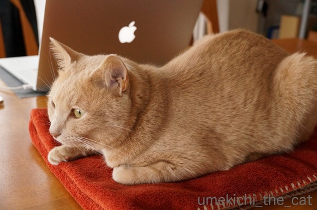
ああ〜やられた( ；∀；)
こういう事に関しては、ほんっとうに敏感ですよね！梅吉さんは！！
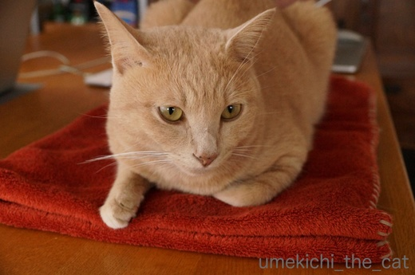
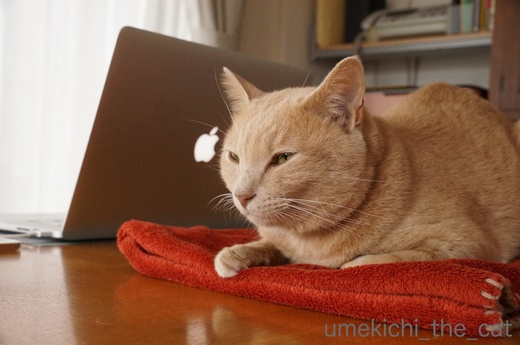
そんなねむねむのお顔されたらね〜。
おかーさんは今日はそのひざ掛け使うの諦めますよ・・・
でもせめてテーブルの上からは避けてくださいね。
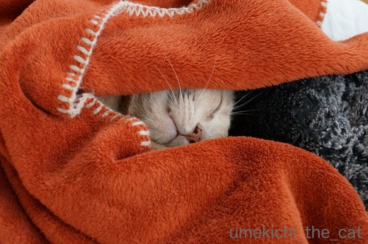
くるっと包んでもう一枚のひざ掛けの上へ。
ちらキバで幸せそうに寝始めました。
いいんですよ！２枚しか無いひざ掛け全部使っても・・・(꒦ິ⌑꒦ີ)
梅吉が包まっているのはニトリのひざ掛け。
軽くてあったかくってしかも安い。確か400円くらい。
もう一枚新調しようかなぁ。でも
ひざ掛けは 買っても買っても 猫のもの
になるんだろうな・・・・
皆さんはあったかグッズ準備し始めましたか？
ただいま我が家はひざ掛けや扇風機が混在しているカオスの世界ですw
先週８日、京都国立博物館 特別展覧会 国宝へ行ってきました。
会期を４期に分けて作品をあれこれ入れ替えるのですべての展示品を見ようと思うと
４回博物館に足を運ばねばなりません。いじわるーーー！！
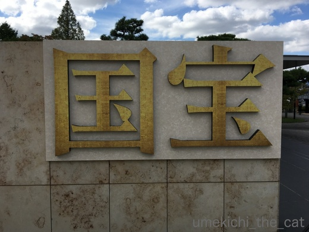
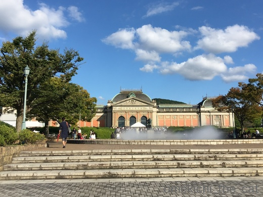
季節外れに暑い日で並んでいると汗がダラダラ。
どのくらい並んで待つのかしらね・・・と公式Twitterをチェック。
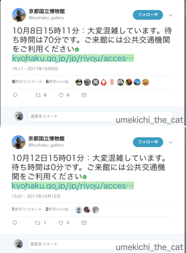
こんな感じでちょっと怪しげなtweetの情報なんですが・・・^^;
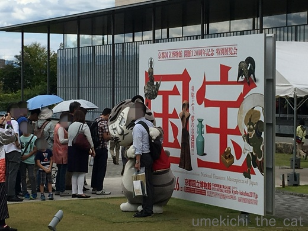
来場者サービスにがんばるトラりん 中の人がんばれー！＾＾！
トラりんの目つきっていたずらを企んでいる時の梅吉の目つきにそっくり。親近感わきます。
係りの人が70分待ちとアナウンスしていましたが２〜30分くらいで中に入れたかな。
展示会場はものすごい人。人混みすぎて普通の声でしゃべっても全然迷惑じゃありません。
小さい展示物は近寄ることすら難しく人垣の間からチラッと見えただけのものもありました（涙）
でも普賢菩薩像、火焔型土器などの見たいものはしっかり見てきましたよ〜。
展示品一点一点のクオリティが高すぎるのと人が多すぎるので見ていてとっても疲れます。
作品を所蔵している場所を確認して
「大阪、京都、奈良？今度現地に行ってゆっくり見るわ！」という気持ちになるのは
関西在住者の奢りでしょうか・・・ (^▽^;)
次は3期目の金印（漢委奴国王印 初見）と等伯の「松林図屏風」（２回目）を狙っています。
体力つけておかなくっちゃー！
ランチはタイ料理。
グリーンカレーとトムヤムクンがセットになってます。
お野菜たっぷりで美味しかったです。

カフェオレ色の梅吉

梅吉 2023年8月10日 永眠


梅吉と出会った譲渡会

犬猫の理由なき殺処分ゼロ
妄想広告
UMEKICHI 光

爆発的に早い！
時々攻撃的！
Thanks to Mr.Boss365
爆発的に早い！
時々攻撃的！
Thanks to Mr.Boss365

赤いひざかけが似合いますね。うちはまだあったかグッズは出してないんです。だから猫たちは娘の制服のベストに乗ってます（笑）ウールだからね(*^^*)
by palpal (2017-10-13 15:31)
きゃわいい・・・いつも元気な梅ちゃんだけど、まったりホカホカしているのが、ほっこりしてしまいます(*´ｪ`*)ﾎﾟｯ
by Ginger (2017-10-13 15:54)
梅吉さん！幸せそうですねぇ～(*^_^*)
あったか毛布に包まれてヌクヌク＆スヤスヤ♪
我が家もまだ扇風機は出してますぅ～！
毛布は一年中出しております(;^_^A
なにせ愛犬に合わせてクーラーかけているので！
by きぃ (2017-10-13 16:09)
ちらキバでくるまってる梅吉さんが、あったかそうで幸せそうで、いい写真ですね~。急に寒くなりましたが冬物の準備もしておらず、抱きしめあって寝ている猫たちに混ぜてほしい気分です。
by zombiekong (2017-10-13 16:37)
ユキが布団の中に入って来るようになりました。
幸せです(^-^;
by riverwalk (2017-10-13 21:19)
そうだ、ひざ掛けをだそう。
すぐ出しましたよ。
梅吉さん、スヤスヤと幸せですね〜
by kiki (2017-10-13 21:21)
暖かいところはすぐに見つけますね！さすが良く見ています。
by みぃにゃん (2017-10-13 21:55)
包まってねむる梅吉さん、気持ちよさそう♪
一気に11月並みの気温になると聞いて、慌ててキャットタワー最上階にあったかフリースを敷き、こたつの中にラグを敷いて冬用猫ベッドを置きました！
下僕は衣替えがまだなので部屋着はハーフパンツのままですが(^▽^;)
国宝展、祝日に行った人から「1時間待って入ったら中はババ混み。人の頭で小さな展示は見えない」と聞いて、何年か前に行った奈良の「正倉院展」を思い出しました。
遠方で見に行けないとか、めったに公開しないものターゲットを絞るのは大正解だと思います。陶磁器とか普通に常設展示されている国宝もありますから^^;
by ゆきち (2017-10-13 22:12)
あぁ、こんなに幸せそうな顔をされたら、すべてのひざ掛けは
梅吉さんのものになっちゃいますよねぇ(⌒-⌒; )
お猫様って新しい物好きですが、かといって古い物を手放すことも
してくれませんもんねぇ(*_*)
うちも「かみさんの物＝自分の物」とお猫様達は思ってるようです(⌒-⌒; )
えっ？私の物？・・・そこは聞かないでください´д` ;
by ニッキー (2017-10-13 22:53)
寒くなって来ると、
猫がそばにいてくれるといいだろうな、思います。
膝の上に乗っければ暖かいし、
こんな寝顔を見せられたら、心までホカホカです。
テレビでコマーシャルを見た国宝展、
予想通り大人気のようですね。
行ってみたいと思いますが・・・。
by うめむす (2017-10-13 22:54)
ひざ掛け、いい色ですね～梅吉さんにお似合い！
チラ牙の寝顔も超キュート＾＾
買っても買っても‥一句？
いえ、お猫様が気に入らなかったやつを使えますよ！＾＾；
国宝、見ごたえありそうですね～。
ランチも美味しそう＾＾
by sana (2017-10-14 00:15)
ニトリで400円、良いですねー。
私も買いに行かねば。
膝掛けだのフリースだのバスタオルだの
「わーい！」という感じにほっくりほっくりして
そして至福の顔で寝ますね、ネコ...
by ryang (2017-10-14 00:37)
気温も急に下がりましたからねー
ブランケット、我が家にもホント山のようにありますが・・・
90％はねこさまに取られてあちこちで乗り放題です(｡-_-｡)
しかし特別展ってなんであんなに混むのでしょうね。（特別展だからか）
おぉ、おぉ、トムヤムクン大好きです♡（*´∀｀*）
by Ja-Kou66 (2017-10-14 01:10)
ひざ掛けに包まって夢見る梅吉さんのお姿、
とても癒されます～♪ ^^)
国宝展、すごい人気なのですね！
想像以上です！！
by yes_hama (2017-10-14 01:14)
夏日が続くかと思ったら、急に涼しくなりましたね。
ニャン達の目に負けて、コタツに布団を掛けました。
ヒーター無しでも中に入ると温かいみたいです＾＾；
by ぽちの輔 (2017-10-14 07:06)
梅吉さんと膝掛けで｢暖｣って感じの色合いですね〜。
見ているだけで暖かい(^^)
関東も今日は最高が16度。ヒートテック始めました(^^;
by も〜 (2017-10-14 08:40)
膝掛け 気持ちよさげですやん![[黒ハート]](https://blog.ss-blog.jp/_images_e/136.gif)
我が家も
扇風機もホットカーペットも出てます…
冷えると体調崩すから
ぬくぬくしないとね♪
梅ちゃんも冷えは禁物ですなぁ
国宝
テレビで見てたらスゴイ人だってね。
どこも人が多いんですねぇ…
人混みで疲れる私は
引きこもりしときます。
豚汁でも作って食べますわ
先日の梅ちゃんの検査。
お薬生活になったんですね。
やっぱりお父さんに似たんですよww
by ヨッシー (2017-10-14 09:20)
ひざ掛けは 買っても買っても 猫のもの ･･･うまいっ♪
でも、こんだけ、ぬっくぬくで使いこなしてくれるなら、
もう梅吉さんに差しあげるしかないですにゃあ♡
by のらん (2017-10-14 10:55)
梅吉くん、ひざ掛けに包まったままソファに移動してもらったのかな？
ぬくぬく。とっても幸せそうな寝顔です(#^^#)
こんな可愛らしい寝顔を見せてくれるのなら
私のひざ掛けも差し出させていただきますよっ！
ニトリのひざ掛け、ブランケットステッチが可愛いね。
何枚あってもいいかも♪
by emi (2017-10-14 13:50)
確かに、ニャンコは幸せの求道者ですね＾＾
さすが梅吉さん、言い得て妙です♪
何か温かいもの準備してると、いつの間にかササッと
乗っかってたり、inしてたりして
笑っちゃいます( ´艸｀)
白目もいいけど、牙みせ寝もいいですね＾＾
by マーヤ (2017-10-15 00:47)
朝晩はひざかけがいる季節になりましたね。
わがやの猫も膝にのってくれるようになりました。
by 響 (2017-10-15 08:40)
国宝展おつかれさま！！！
観たいものは、ちゃんと観られたようで良かったです^^
さすがに凄い人だわー。
そうよ、今度現地に行ってゆっくり見るわなんて言えるのは
関西にお住まいだからよぉー(笑)
梅吉君、気持ちよさそうだね^^
うちも今日、ちょっと毛足の長いラグを出してリビングに敷きました。もうちょっと寒くなったら、テーブルはコタツに変身するんだろうな(笑)
by リュカ (2017-10-15 12:16)
ひざかけのお色、梅吉さんに似合いますね。
天気も悪いし、仕方ない？
人気展は最近ほんと並びます~。
展示替えも多いですし、
後半になるとよけい並ぶし…^^;
by ふにゃいの (2017-10-15 14:19)
梅吉さんもぬくぬくで、これからのシーズンは膝掛けに潜っちゃいますね(^^)
by ma2ma2 (2017-10-15 18:39)
palpalさん＞やっぱり動物の毛に引き寄せらるのね〜。
お嬢さんのかほりが付いているからなおさら人気なのかな(≧▽≦)
Gingerさん＞梅吉とひざ掛け、暖かそうな配色なんですよね〜＾＾
見ていると全てが睡魔に訴えかけてくるので危険です(^▽^;)
きぃさん＞暑がりのLeaちゃんに寒がりのケンさん・・・
きぃいさんのお家は温度管理が難しそうですね！
でも間違いなくLeaちゃん優先ですよねー(*>艸<)
Leaちゃん初めての冬はどうなるのかなぁ。寒がりかなぁ。
zombiekongさん＞猫団子は最大何匹で構成されたことがあるのか
とっても気になります！
にゃんこそれぞれだから加わらない子も当然いるのですよね〜。
にゃんこ一匹に寄り添って暖をとるのもいいですが
やっぱり団子に憧れるなぁ・・・・
仲間入りは無理でも見ているだけでも暖かそう＾＾
riverwalkさん＞我が家も昨夜「布団に入ってくる猫」初観測でした＾＾
kikiさん＞思い立ったらすぐ出てくるところが流石kikiさんですね。
私はどこにしまったかいな・・・と一瞬の間が(^▽^;)
みぃにゃんさん＞にゃんこは人の行動をよく見ていますよ〜。
油断なりません(⌒_⌒;
ゆきちさん＞まずこてつくんの暖を優先するのが優秀な下僕の証ですね(^_－)☆
にゃんこが寒そうにうずくまっていると気が気じゃないですものねー。
「正倉院展」はほぼ毎年行っているのですが
「国宝展」はそれよりも人が多かった様な気がします。
正倉院展は工芸品（と言っていいのか・・・）が多いのでがんばって
前列でかぶりつきで見ることにしているのですが
「国宝展」は人が多すぎてそんな気にもなれませんでした・・・(^▽^;)
ニッキーさん＞すべてのあったかグッスは猫様のために・・・＾＾
下僕のお膝もその一つなので求められる前のトイレは欠かせません(*>艸<)
ニッキーさんの物には・・・きっとニッキーさんがお出かけされた後に
そっとパジャマやお洋服の上に乗っていると思います(^_－)☆
なぜか男性の着用後の服って人気があるんですよー。
こんど痕跡を探して見てください＾＾
うめむすさん＞そうですよーそうですよー！猫、飼いませんか〜＾＾
可愛いですよ！あったかいですよ〜！！
国宝展、会期中の金・土曜は19:30まで入場できる様ですが
その時間帯でも混んでいるみたいです。
いつ行っても混んでいる、と覚悟を決めてお出かけくださいませ。
ちなみに並んでいる間にポケgoが出来ますw
sanaさん＞はい＾＾一句ひねって見ましたw
お猫様が気に入らなかったのは使い心地が今ひとつなんですが
下僕なのでそれで我慢することといたします^^;
グリーンカレーはココナッツミルクが濃厚で
トムヤムクンはフレッシュなお野菜が後入れしてあって美味しかったです。
パクチーが控えめなのがなお良し！でした。
パクチーあまり得意じゃないので・・・
ryangさん＞「お値段以上♪」の宣伝文句は正しかったですよ＾＾
シーズン初め今が一番商品が充実しているかもしれませんね〜。
タオル類とともに下僕のおひざもほっくりほっくりしてくるので
すぐにデニムがボロボロになってしまうこの季節です^^;
Ja-Kou66＞つい最近まで扇風機を回していたのがウソの様です^^;
今日は今シーズン初の裏起毛タイツを引っ張り出してきましたよw
我が家も猫が寝るところあちこちにブランケットを配置しております。
知らない人が見たらなんでこんなところに・・・という場所にも。
今まではもらっても捨てていたノベルティのブランケットも
お使いになるか猫様にお伺いを立ててから捨てる様にしています (^▽^;)
トムヤムクン美味しかったです！厨房からはタイ語が、
ホールには前プミポン国王の肖像画が・・・
yes_hamaさん＞これからは色んなものに包んじゃいますよ＾＾
毛足が短めだとやっぱり寒いのかなーと思っています。
国宝展、覚悟して行ったのですが本当にすごかった！
外国人観光客、美術マニアっぽい方、
普段こんな所来ないよ！と言っていたおっちゃん
みんな国宝には吸い寄せられる様です(*>艸<)
ぽちの輔さん＞どのお家でも優先されるのはニャンコの様ですね＾＾
布一枚でずいぶん温度が変わりますよね〜。
うちはコタツが無いのでキャリーに毛布を被せて代わりにしてもらおうかなw
も〜さん＞暖かそうな配色ですよね〜＾＾
私も「あ、梅吉似合うじゃない！」とひとりで絶賛^^;
ヒートテックの登場とは！真冬はヒートテックの二枚重ねに！？
私は今日裏起毛タイツを履きましたけどねー(^_－)☆
ヨッシーさん＞私は暑さにも寒さにも弱いので脱いだり着たり
春と秋は忙しいのです・・・^^;
この２〜３日扇風機の風を浴びることはさすがになくなりましたが
洗濯物を乾かすためにもう少しの間リビングには扇風機が
出しっぱなしになりそうです！
豚汁・・・いいですね〜。季節ですね！！
梅吉とおとーさん好きな食べ物も似ていたりします。
お酒は別ですけどねっ(*>艸<)
のらんさん＞今日も朝から贅沢にひざ掛けを使って寝ております^^;
流石に寒いのでひざ掛けごと梅吉をお膝にオン！！
あったか〜い♪
emiさん＞赤ちゃんみたいにおくるみして移動しましたよ〜＾＾
そのまま寝てくれれば良いのにモゾモゾ動くので
ひざ掛けからはみ出まくり・・・^^;
それを甲斐甲斐しく直す下僕で〜すwww
ひざ掛け、そのうちSOSを送るかもしれません！よろしくぅ(^_－)☆
マーヤさん＞温かいものふかふかなもの・・・押入れから布団を出す時と
衣替えは特にお手伝いが激しくて・・・^^;
梅吉が遊んでいるから後回し、寝ちゃったから後回し・・・
とちっとも進みません (^▽^;)
キバ見せるの得意です！
キバが乾いてお口が閉まらないこともよくありますよーww
響さん＞お膝猫にお布団猫、俳句の季語になりそうですよね＾＾
（もうなっているのかな・・・・・）
リュカさん＞ほぼ毎年行っている「正倉院展」もすごい人なんだけど
「国宝展」はそれを上回る人出でした^^;
でもね、ここだけの話、この手の展覧会では2008年トーハクの
「対決ー巨匠たちの日本美術」の方が面白かったなー。
（リュカさんなら見ているはずよね？）
良い品も羅列陳列されると魅力が薄れるかも・・・
ゼータクな話かしらw
各家庭でお猫様用の冬支度が進んでいる様ですね＾＾
うちはコタツが無いのでキャリーに毛布をかけて
梅吉専用簡易こたつにしようかな。入り浸りになったら寂しいけどね。。。
ふにゃいのさん＞暖かそうな配色でしょー＾＾
自分に似合うと思っているのか梅吉もお気に入りのひざ掛けですw
国宝展、後半にも行きたいのですが
駆け込み見学の人も増えてくると思われるので
さらに激混みの予感・・・=͟͟͞͞ ( ꒪౪꒪)
ma2ma2さん＞ひざ掛けに潜り込んだら中々出てきません^^;
去年は「あら、お久しぶり！」って何度か挨拶しましたw
by ちぃ (2017-10-16 13:36)
そうそう、求道者！（笑）
私も求道者したいけど、
求めるものは、片っ端から猫たちに取られてますｗ
でも、シアワセそうな顔を見ると、ほっこり♡
国宝展、4回に分けるとは、なかなかやりますねぇ。
それだけお宝満載！なのでしょうね。
金ピカ屏風は、それだけで極楽気分に浸れそうです～。
by morichan (2017-10-16 16:40)
morichanさん＞お猫様に全てをゆずって寒かったり不便だったりするのに
ニマニマしちゃうのが下僕としての「道」ですよー！！
私もmorichanさんも立派な求道者ですともっ(*>艸<)
お宝に囲まれるのも中々のものでしたよ！
でも、どちらを向いても凄すぎる品なのでお腹いっぱいな感じもして・・・^^;
つくづく自分は庶民だな、なんて実感もしました！
by ちぃ (2017-10-16 21:33)